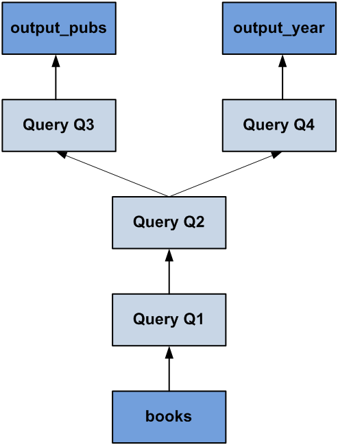

Each table assignment in a procedure or table user defined function specifies a transformation of some data by means of classical relational operators such as selection, projection. The result of the statement is then bound to a variable which either is used as input by a subsequent statement data transformation or is one of the output variables of the procedure. In order to describe the data flow of a procedure, statements bind new variables that are referenced elsewhere in the body of the procedure.
This approach leads to data flows which are free of side effects. The declarative nature to define business logic might require some deeper thought when specifying an algorithm, but it gives the SAP HANA database freedom to optimize the data flow which may result in better performance.
The following example shows a simple procedure implemented in SQLScript. To better illustrate the high-level concept, we have omitted some details.
CREATE PROCEDURE getOutput( IN cnt INTEGER, IN currency VARCHAR(3), OUT output_pubs tt_publishers, OUT output_year tt_years) LANGUAGE SQLSCRIPT READS SQL DATA AS BEGIN big_pub_ids = SELECT publisher AS pid FROM books -- Query Q1 GROUP BY publisher HAVING COUNT(isbn) > :cnt; big_pub_books = SELECT title, name, publisher, -- Query Q2 year, price FROM :big_pub_ids, publishers, books WHERE pub_id = pid AND pub_id = publisher AND crcy = :currency; output_pubs = SELECT publisher, name, -- Query Q3 SUM(price) AS price, COUNT(title) AS cnt FROM :big_pub_books GROUP BY publisher, name; output_year = SELECT year, SUM(price) AS price, -- Query Q4 COUNT(title) AS cnt FROM :big_pub_books GROUP BY year; END;
This SQLScript example defines a read-only procedure that has 2 scalar input parameters and 2 output parameters of type table. The first line contains an SQL query Q1, that identifies big publishers based on the number of books they have published (using the input parameter cnt). Next, detailed information about these publishers along with their corresponding books is determined in query Q2. Finally, this information is aggregated in 2 different ways in queries Q3 (aggregated per publisher) and Q4 (aggregated per year) respectively. The resulting tables constitute the output tables of the function.
A procedure in SQLScript that only uses declarative constructs can be completely translated into an acyclic dataflow graph where each node represents a data transformation. The example above could be represented as the dataflow graph shown in the following image. Similar to SQL queries, the graph is analyzed and optimized before execution. It is also possible to call a procedure from within another procedure. In terms of the dataflow graph, this type of nested procedure call can be seen as a sub-graph that consumes intermediate results and returns its output to the subsequent nodes. For optimization, the sub-graph of the called procedure is merged with the graph of the calling procedure, and the resulting graph is then optimized. The optimization applies similar rules as an SQL optimizer uses for its logical optimization (for example filter pushdown). Then the plan is translated into a physical plan which consists of physical database operations (for example hash joins). The translation into a physical plan involves further optimizations using a cost model as well as heuristics.
